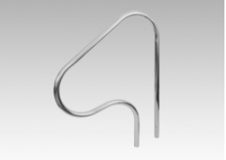
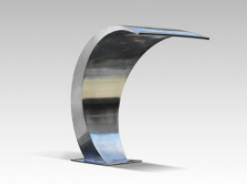
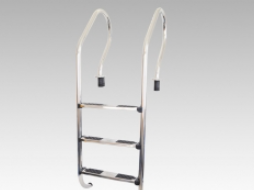

Consulte por accesorios para piscinas que sean de interés: ducha, trampolín, saca hojas, medidor de PH, pasamanos, etc.
PASAMANO CURVO CORTO Altura 0.98 m. / Ancho: 0.71 m.
PASAMANO CURVO LARGO: Altura 0.98 m. / Ancho: 1.20 m.
CASCADA PALMA: Cascada volumétrica para una vereda con atura de 46,5 cm. Genera una lámina de agua vistosa y continua de 35 cm de ancho hasta el espejo de agua.
CASCADA CISNE: Cascada tubular de acero inoxidable con boquilla plana, y altura de 108 cm. Pensada para colocarse verticalmente en vereda o dentro de la piscina, produce una lámina de agua vistosa y continua hasta el espejo de agua. Su terminación en pulido brillante destaca y ofrece un distintivo ornamental para su piscina.
CASCADA SALTO:Cascada volumétrica para pared. Genera una lámina de agua vistosa y continua de 34 cm de ancho hasta el espejo de agua. Su terminación en pulido brillante destaca y ofrece un distintivo ornamental para su piscina.
Escalera de 3 peldaños para piscinas que van desde 1 m a 1,30 m.
Escalera de 4 peldaños para piscinas de profundidad superior a 1,30 m.
CON 3/4 PELDAÑOS DE PLÁSTICO